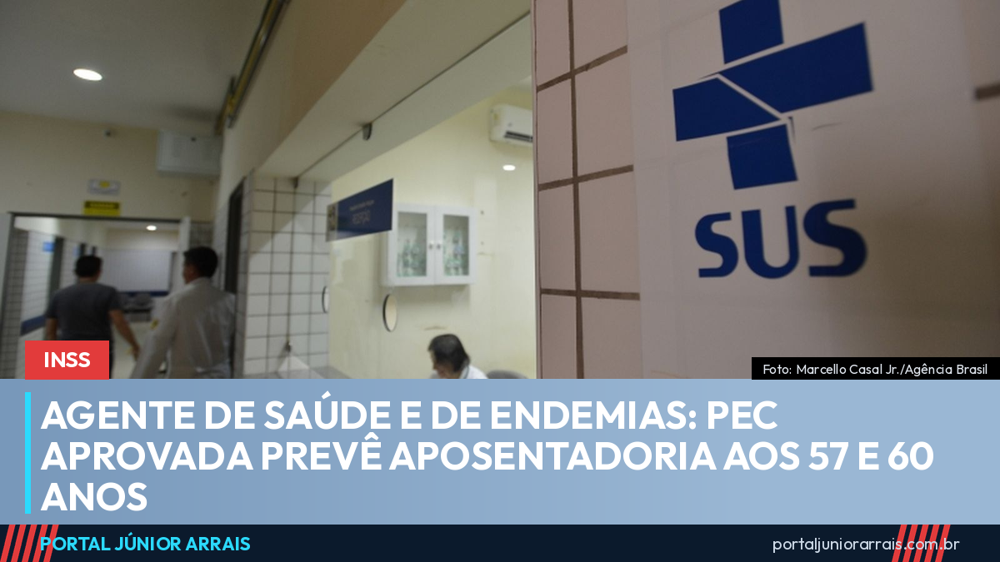

Agente de saúde e de endemias: PEC aprovada prevê aposentadoria aos 57 e 60 anos

Uma das categorias que mais caminha pelos bairros do país está perto de conquistar uma regra própria de aposentadoria. O Senado aprovou, em dois turnos, a PEC 14/2021, que cria aposentadoria diferenciada para agentes comunitários de saúde e agentes de combate às endemias. O texto já havia passado pela Câmara dos Deputados e agora aguarda promulgação pelo Congresso Nacional.
As idades previstas
A regra permanente fixa a aposentadoria em 57 anos para mulheres e 60 anos para homens, desde que comprovados 25 anos de contribuição e de efetivo exercício na atividade.
Para dimensionar o que isso representa: pela regra geral vinda da reforma da Previdência, a idade mínima é de 62 anos para mulheres e 65 para homens. A diferença chega a cinco anos.
A transição
Quem já está na atividade não pula direto para as idades finais. O texto prevê transição: para agentes que completarem 25 anos de contribuição até 2030, o texto prevê idade mínima de 50 anos para mulheres e 52 anos para homens. A partir daí, a cada cinco anos a idade mínima sobe dois anos, até chegar aos 57 e 60 anos em 2041.
Além da aposentadoria
A proposta trata também do vínculo de trabalho. Agentes com vínculo temporário, indireto ou precário na data da promulgação deverão ser efetivados como servidores estatutários, desde que tenham participado de processo seletivo público realizado após 14 de fevereiro de 2006 ou de seleção anterior validada pela Emenda Constitucional 51, de 2006. Estados, Distrito Federal e municípios teriam até 31 de dezembro de 2028 para concluir essa regularização.
O texto reconhece a atividade como essencial ao Sistema Único de Saúde, estende as regras aos agentes indígenas de saúde e de saneamento e prevê assistência financeira da União aos entes federativos para compensar o aumento de despesa. Também assegura revisão dos proventos de agentes que já se aposentaram, desde que cumprissem os requisitos na data da concessão — sem pagamento de valores retroativos.
O que ainda falta
Aprovada nas duas Casas, a PEC segue para promulgação pelo Congresso Nacional, quando passa a integrar a Constituição. Enquanto isso não acontece, as regras atuais continuam valendo, e a aplicação prática ainda vai depender de normas que disciplinem a concessão nos regimes próprios e no Regime Geral.
Vale registrar que a proposta gerou divergência quanto ao custo. Projeções da área previdenciária apontaram impacto na casa das dezenas de bilhões de reais ao longo de dez anos, e parte dos parlamentares levantou dúvidas sobre a fonte de financiamento.
Cuidado com golpe
Mudança de regra de aposentadoria é assunto que atrai golpista com velocidade. Aparecem ofertas de "inscrição na nova aposentadoria", "reserva de vaga na transição" ou "atualização do tempo de serviço" mediante pagamento de taxa, Pix ou envio de foto de documento. Não existe inscrição prévia em regra constitucional, e nenhum órgão público cobra por isso.
Agente de saúde ou de endemias que queira entender como o tempo já trabalhado se encaixa nas regras de transição, ou que tenha dúvida sobre períodos de vínculo temporário não averbados, deve procurar um profissional de sua confiança para analisar a documentação.
Fonte
Agência Senado, aprovação da PEC 14/2021 em dois turnos no plenário do Senado Federal, em 14 de julho de 2026, por 73 votos a 1.
Conteúdo informativo — não substitui orientação individualizada sobre o seu caso.
Foto: Marcello Casal Jr./Agência Brasil